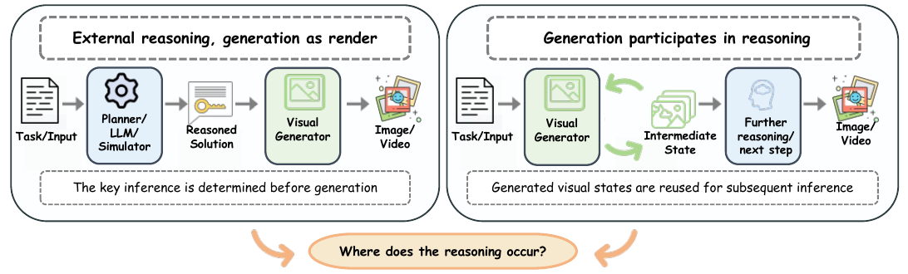

Generative models are now used to predict future scenes and solve visual problems. A correct generated image or video does not by itself show that the generator performed the underlying reasoning. The same ball-rolling video can render a trajectory computed by an external simulator, or the generator can predict the motion itself.
Generative Visual Reasoning (GVR) means visual generation tasks whose correctness depends on inferring task-relevant states, relations, or transitions that are not explicitly given in the input. That inferred information must also appear consistently in the generated output. The definition is about the task. It does not assume that the visual generator is the component that performs the inference.
What information must be inferred for visual generation to be correct, and when does the visual generator contribute to that inference rather than merely render an externally determined solution?
视觉生成要正确，必须推断哪些信息？视觉生成器是参与了这些推断，还是只是在渲染一个外部已经确定的解？

External reasoning can fix the solution before generation. Alternatively, generated intermediate visual states are reused for subsequent reasoning. The central question is where the reasoning occurs.
左侧：外部推理先确定解，生成器负责渲染。右侧：生成的中间视觉状态被后续推理继续使用。核心问题是推理发生在哪里。
Generating an intermediate image is neither necessary nor sufficient for attributing reasoning to the visual generator. An intermediate frame may only visualize a plan computed elsewhere, while a generator may infer task-relevant information without showing an explicit visual chain of thought. Task success and generator-level reasoning are different claims.
Publication trends on arXiv place visual reasoning alongside the growth of visual generation. Counts for 2026 are partial and are marked as such in the figure.
arXiv 上的发表趋势说明，视觉推理与视觉生成一起增长。图中的 2026 年计数只覆盖已观察到的时间段。
A task-centered framework以任务为中心的框架
The survey separates two questions. The task question asks what must be inferred and which states determine correctness. The system question asks where the required capability comes from, what representation carries it, and how it reaches the visual generator.
Capability source. Where task-relevant information originates: training data, a language model, a multimodal model, a simulator or formal system, or a pretrained teacher.
Capability carrier. The representation that stores or conveys it: natural language, a structured state, a continuous latent, a visual state, or an evaluation signal.
Capability bridge. How that information influences the generator: internalisation, plan-then-render, latent transfer, interleaving, or verification.
(a) A GVR system is described by its capability source, carrier, and bridge. In the physics example, a simulator supplies a trajectory, and plan-then-render passes that structured state to a video generator. (b) The five bridges, with the sources and carriers typically associated with each.
（a）用能力来源、载体和桥接描述一个 GVR 系统。物理例子中，仿真器给出轨迹，plan-then-render 把这个结构化状态交给视频生成器。（b）五种桥接及其常见来源和载体。
The same task can use different sources, carriers, and bridges. When a simulator computes the ball’s trajectory before generation, the simulator is the source, the trajectory is a structured-state carrier, and plan-then-render is the bridge. The generator may instead rely on a capability it learned, or on feedback from a verifier. Similar videos can therefore come from different reasoning mechanisms.
Tasks are organized by the task-relevant state and by the temporal scope of correctness. The state may be discrete or relational, structured, or dense. Correctness may depend only on the final state, which the survey calls terminal-supported, or also on the intermediate states and transitions, which it calls trajectory-supported. These are correctness requirements, not model architectures or a ranking of difficulty.
Columns distinguish discrete or relational, structured, and dense states. Rows distinguish terminal-supported tasks from trajectory-supported tasks.
列区分离散或关系状态、结构化状态和密集状态。行区分终态任务和轨迹任务。
Scope
Discrete / relational
Structured
Dense
Terminal-supported 终态
Relation-graph completion, Sudoku 关系图补全、数独
Block rearrangement, 3D placement 方块重排、三维摆放
Folding, deformation 折叠、形变
Trajectory-supported 轨迹
Sokoban, Hanoi 推箱子、汉诺塔
Maze navigation, projectile motion 迷宫导航、抛体运动
Pouring, knot tying 倾倒、打结
The appropriate representation depends on what must be preserved to solve and evaluate the task. A final image can be enough for a solved puzzle. A sequence is needed when the path is part of the answer. Full video is useful when correctness depends on continuous motion, contact, or physical interaction that sparse states omit.
A capability bridge specifies how task-relevant information affects visual generation. The five bridges can be combined. Planning can be followed by verification, and training-time feedback can become a capability the generator later uses directly.
Each bridge is shown with its information flow and representative implementations. Internalisation learns the capability. Plan-then-render supplies an explicit plan, such as a physical trajectory or keyframes. Latent transfer injects learned features. Interleaving reuses generated visual states. Verification uses correctness feedback for training, search, or revision. Example images are adapted from the cited works.
每种桥接都给出了信息流和代表性实现。Internalisation 把能力学进生成器；plan-then-render 先给出物理轨迹或关键帧等显式计划；latent transfer 注入学到的特征；interleaving 复用生成的视觉状态；verification 用正确性反馈进行训练、搜索或修改。示例图改编自相应论文。
Internalisation
The generator acquires the capability from data, annotations, teacher representations, or in-context examples. This is useful when the relevant dynamics are difficult to write down, but success alone does not show whether the model learned the required inference or only a visual pattern.
A language model, multimodal model, or simulator first produces a plan. The plan may be a detailed prompt, a layout, a trajectory, or a visual state such as a keyframe, and the generator then renders it. The plan can be inspected, but the result depends on the plan’s quality.
An external model infers semantic, spatial, causal, or dynamic information, and a learned interface carries it into the generator as a latent. This can transfer information that is awkward to write explicitly, with less direct control over what is actually used.
Generation alternates textual reasoning with images, video, or latent visual states. The important test is whether a generated state changes the next decision, rather than only appearing as an illustration.
A verifier scores or checks an intermediate or completed result. The signal can train the generator, choose among candidates, or request a revision. Verification can improve reliability without showing that the generator itself performed the reasoning.
Match the output to what correctness requires: a final state for terminal-supported tasks, intermediate states for trajectory-supported tasks, and dense video when sparse states omit essential motion or interactions.
Choose capability bridges by the information a task needs and how that information can be supplied. Explicit plans, learned capabilities, latent features, visual feedback, and verification offer different forms of control and evidence; they can also be combined.
A correct generated output establishes system-level task success, but does not identify where inference occurred. Reasoning attribution requires controlled interventions on the sources, carriers, and bridges that supply task-relevant information.
Generated visual states are useful reasoning intermediates when later decisions depend on information they preserve. Their benefit should be tested against explicit plans and compact representations under matched task conditions.
Native visual reasoning is especially relevant for continuous physical change, such as pouring or knot tying, where a sparse trajectory may omit shape, contact, and deformation. Its advantage should be tested against a symbolic plan or simulator that already provides the task-relevant information.
Evaluation should follow the task-relevant state and its temporal scope, rather than visual quality alone. A terminal task can be checked by its final symbolic, spatial, or physical state. A trajectory task also requires valid intermediate states and transitions. Symbolic steps can be checked one by one; continuous physical interactions need finer temporal evidence. A single reference trajectory should not be treated as the only valid physical outcome.
VBVR provides VBVR-Bench, whose rule-based, human-aligned scorers support reproducible and interpretable evaluation of video reasoning. VBVR-Pro extends this direction to 300 procedural tasks with aligned image, interleaved, and video solutions, and uses deterministic task-specific scorers for evaluation and reinforcement-learning feedback. Explicit checks make the criterion behind a score visible, and they complement a VLM used as a judge.
Fully verifiable evaluation is valuable when the task specification, the extracted state, and the correctness checks can be inspected. A verifier should check final-state constraints for terminal tasks and the required transitions for trajectory tasks, while accepting alternative valid solutions. Deterministic scoring is still relative to the stated constraints and the observation protocol: state extraction from pixels can fail, temporal sampling can miss an invalid transition, and a rule set can omit a relevant constraint. A verified solution establishes task success, not which component performed the reasoning.
Different bridges call for different interventions. Learned behaviour can be tested on unseen tasks; a predicted plan can be compared with the plan that is actually rendered; transferred features can be removed or replaced; intermediate visual states can be edited; and verification can be compared with and without its feedback. A performance change is evidence about a component’s contribution, not a general proof of reasoning.